1התקנה על הטלפון
- פותחים בדפדפן את
epic-pita.github.io/freak-pos/count.html. - אייפון: שיתוף ← "הוסף למסך הבית". אנדרואיד: תפריט ⋮ ← "הוסף למסך הבית" / "התקן אפליקציה".
- מעכשיו פותחים מהאייקון. האפליקציה עובדת גם בלי רשת ושולחת כשהרשת חוזרת.
2בחירת שם
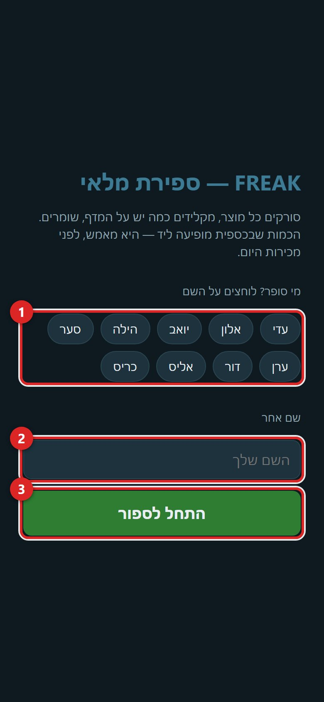
- 1לוחצים על השם שלכם. 23אין? כותבים שם אחר ו"התחל לספור" — השם מצטרף לרשימה.
- השם נשמר בטלפון. להחליף: לוחצים על השם בסרגל העליון.
3מסך הסריקה
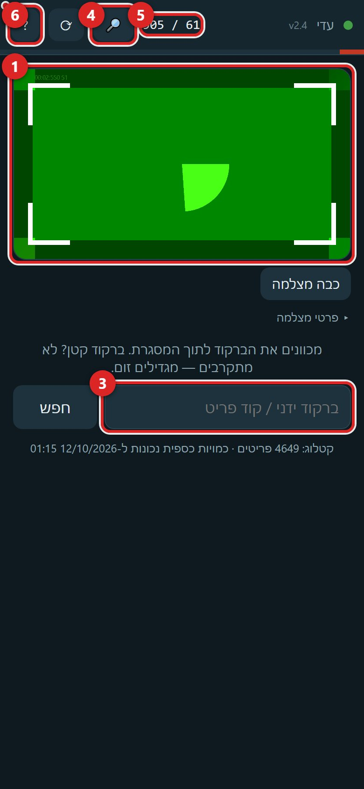
- 1מכוונים את הברקוד לתוך המסגרת. ברקוד קטן? לא מתקרבים — מגדילים זום.
- 2המצלמה מטושטשת? "החלף מצלמה" — בטלפון עם כמה עדשות אחוריות בוחרים את הרגילה (לא הרחבה).
- 3אין ברקוד או שהסורק לא קולט: מקלידים את הברקוד או את קוד הפריט ולוחצים "חפש".
- 4🔎 חיפוש לפי שם. 5כמה נספרו היום מתוך הפריטים במעקב שיש להם כמות בכספית (כרטיסי רפאים לא נספרים ביעד). 6? — העזרה בתוך האפליקציה.
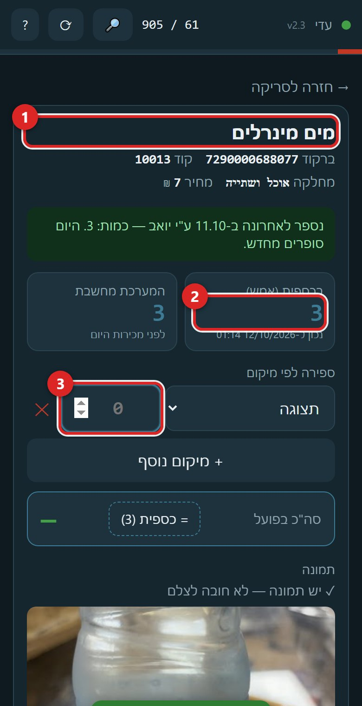
4הפריט נפתח — סופרים
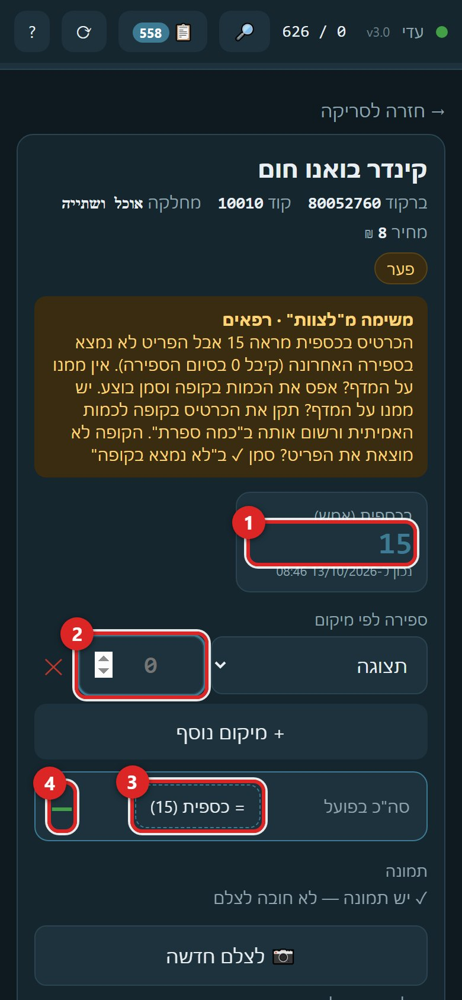
- 1בכספית (אמש) — מה הכרטיס הראה הלילה, לפני מכירות היום. רק להתמצאות.
- 2מקלידים כמה יש על המדף. הסמן כבר שם; Enter שומר.
- 3"= כספית" ממלא את הכמות של הכרטיס כשספרתם ויצא אותו דבר.
- 4סה"כ בפועל — הסכום של כל המיקומים.
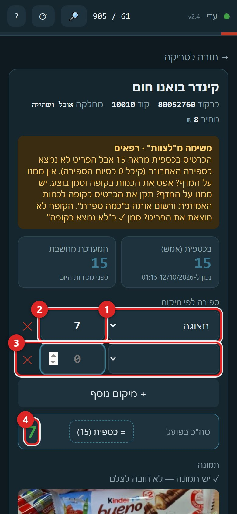
- 1המיקום (תצוגה, מחסן, דיספליי…). 2הכמות באותו מיקום. 3"+ מיקום נוסף" פותח שורה. 4הסה"כ מתעדכן לבד.
ספרתם לא נכון? סופרים שוב. הספירה האחרונה היא הקובעת — שום דבר לא נמחק.
5משימה מ"לצוות" — הכתום
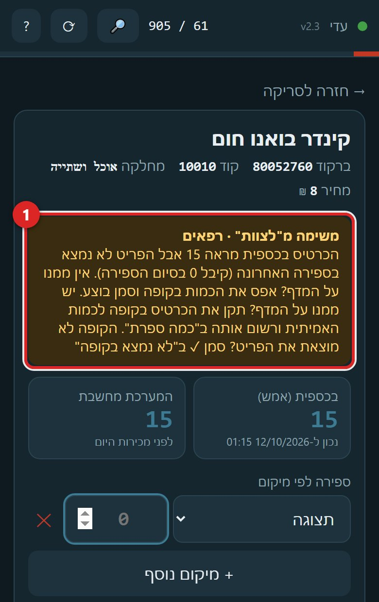
- 1אם לפריט יש משימה ברשימת הצוות, היא מופיעה כאן בכתום. עושים מה שכתוב, וסופרים כרגיל.
רפאים — כרטיס שמראה כמות בכספית אבל אף ספירה לא ראתה את הפריט. שלוש תשובות בגיליון "לצוות":
- אין ממנו על המדף: מאפסים את הכמות בקופה ומסמנים "בוצע".
- יש ממנו על המדף: מתקנים את הכרטיס בקופה לכמות האמיתית ורושמים אותה ב"כמה ספרת" (או סופרים כאן באפליקציה).
- הקופה לא מוצאת את הפריט: מסמנים "לא נמצא בקופה".
6תמונה
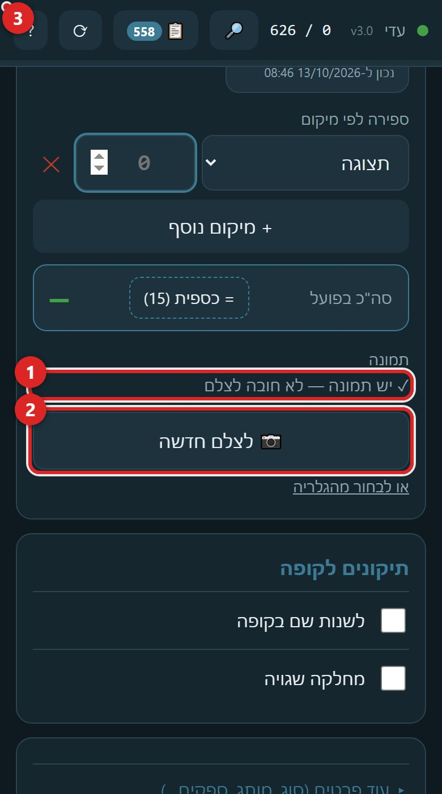
- 1מה המצב: יש תמונה / אין. 2לצלם (או "לצלם חדשה"). 3"אין צורך בתמונה" — מופיע רק כשאין תמונה, ורק עם סיבה.
- יש כבר תמונה לפריט? לא חובה לצלם. אין? מצלמים פעם אחת — את המוצר, שרואים מה הוא.
- "אין צורך בתמונה" — רק עם סיבה (למשל מוצר גנרי). הסיבה נשמרת.
- פריט שלא קיים בכספית (סעיף 9) — תמונה חובה.
7תיקונים לקופה ושמירה
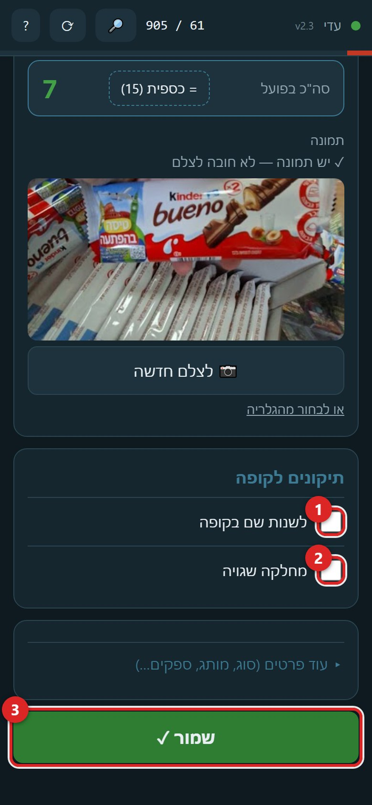
- 1השם בקופה שגוי? מסמנים וכותבים את הנכון. 2מחלקה שגויה? מסמנים ובוחרים. המשרד מתקן בכספית.
- 3שמור ✓ — או Enter בשדה הכמות. נשמר מיד, גם בלי רשת (נשלח כשהרשת חוזרת).
8חיפוש לפי שם
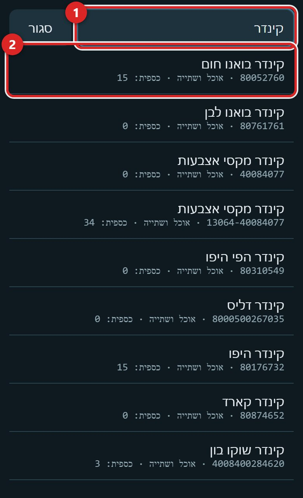
- 1מקלידים חלק מהשם. 2לוחצים על הפריט — נפתח כמו אחרי סריקה.
9פריט שלא קיים בכספית
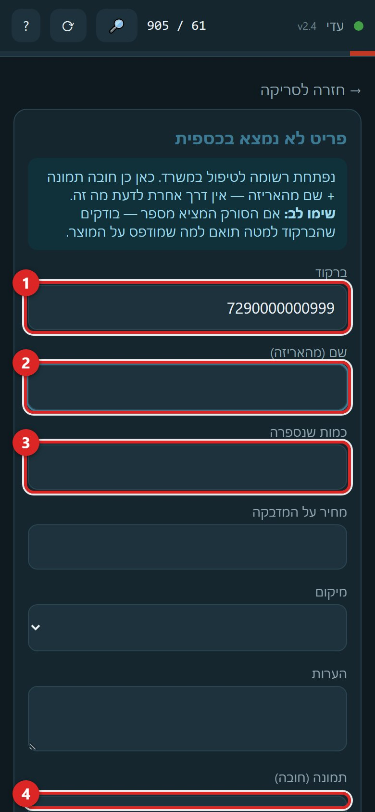
- 1בודקים שהברקוד שנקלט תואם למה שמודפס על המוצר. 2שם מהאריזה. 3כמה יש. 4תמונה — חובה.
- "שמור לרשימת טיפול" — המשרד פותח כרטיס בכספית. הפריט לא נספר כאן, רק נרשם.
10הסרגל העליון
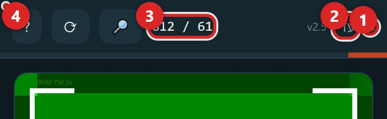
- 1נקודה ירוקה = יש רשת, אדומה = אין. סופרים כרגיל גם באדום.
- 2השם — לחיצה מחליפה. 3נספרו היום / יעד. 4מספר כתום = ספירות שמחכות לשליחה; נעלם לבד כשהרשת חוזרת.
11דוח הספירה
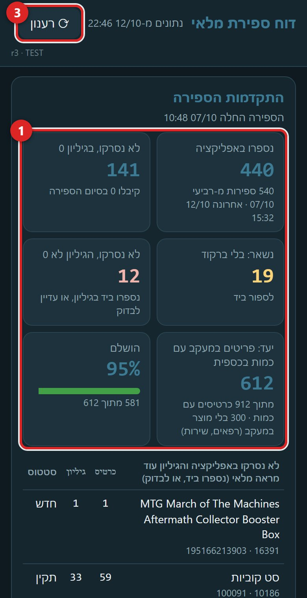
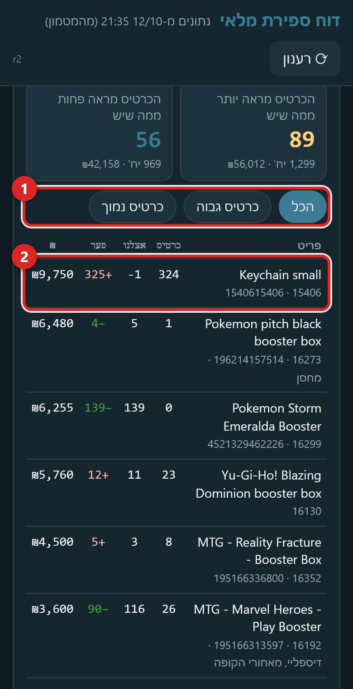
- התקדמות — כמה נספר, לפי יום ולפי סופר.
- מה הספירה מצאה — הפער ברגע הספירה מול הכרטיס.
- מה נשאר לתקן בכספית — הכרטיס היום מול המלאי שהגיליון מחשב. מתקנים בקופה כרטיס אחר כרטיס, לפי הברקוד.
- רפאים ובלי ברקוד — הרשימות שמחכות לטיפול.
13משימות לצוות בטלפון
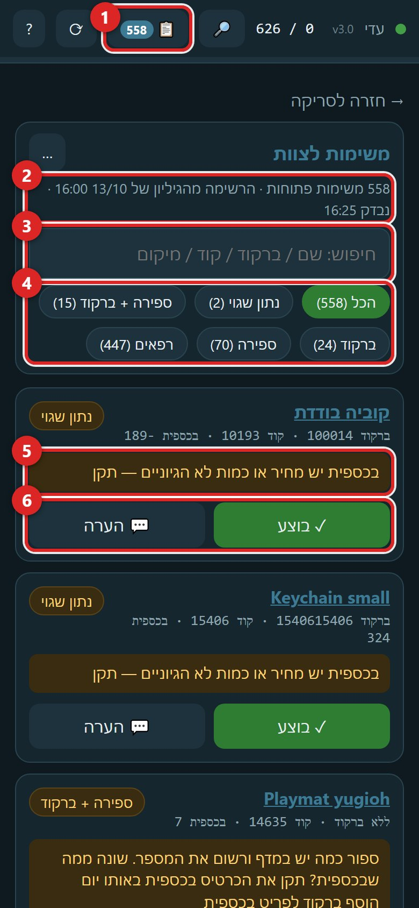
- 1📋 בסרגל העליון פותח את רשימת המשימות. המספר לידו = כמה משימות פתוחות.
- 2כמה משימות פתוחות, מאיזו שעה הרשימה בגיליון, ומתי הטלפון בדק לאחרונה.
- 3חיפוש — שם, ברקוד, קוד או מיקום.
- 4לפי סוג משימה: נתון שגוי, ספירה, ברקוד, רפאים… "הכל" מראה את כולן.
- 5מה צריך לעשות — בכתום, בדיוק מה שכתוב בגיליון "לצוות".
- הרשימה מראה רק משימות שאף אחד לא נגע בהן. מה שסומן, נספר או קיבל הערה יורד ממנה מיד; "נגעו בהם" מראה את אלה. הרשימה נבדקת מול הגיליון כל דקה.
- הברקודים לסריקה בקופה — סורק הקופה לא קורא מסך, לכן 🖨 פותח דף להדפסה: אותן משימות, אותו סדר, עם הברקוד ליד כל פריט (אפשר להדפיס רק סוג אחד של משימות). סורקים מהנייר ומסמנים בטלפון.
- 6הכפתורים — כל משימה מראה רק את מה שמתאים לה:
- 🔢 ספור — פותח את הפריט לספירה. הספירה עצמה היא התשובה — אין צורך ללחוץ "בוצע" אחריה. על פריט שהקופה לא מכירה הכפתור הוא "ספרתי…" — כותבים כמה ספרתם.
- ✓ בוצע — אחרי שתיקנתם בקופה. המשימה יורדת מהרשימה.
- 💬 הערה — כותבים הערה בלי לסמן בוצע. המשימה נשארת.
- לא צריך… — כשלפריט לא צריך את מה שהמשימה מבקשת (לא צריך ברקוד / לא צריך כמות / לא צריך מחיר), או "לא נמצא בקופה" על רפאים.
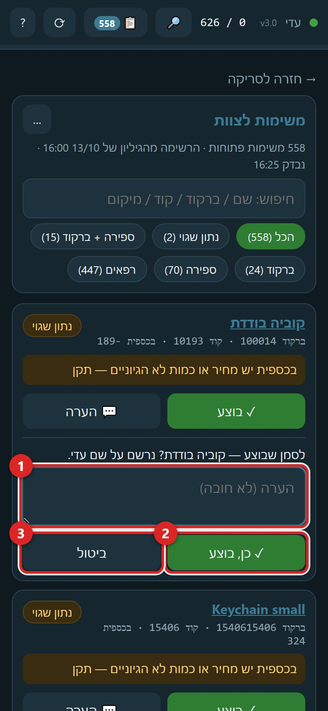
- 1הערה — לא חובה. 2"כן" — נרשם. 3"ביטול" — לא קורה כלום.
סימנתם בטעות? בהודעה הירוקה למטה יש "בטל" — יש 5 שניות. המשימה חוזרת לרשימה ושום דבר לא נרשם.
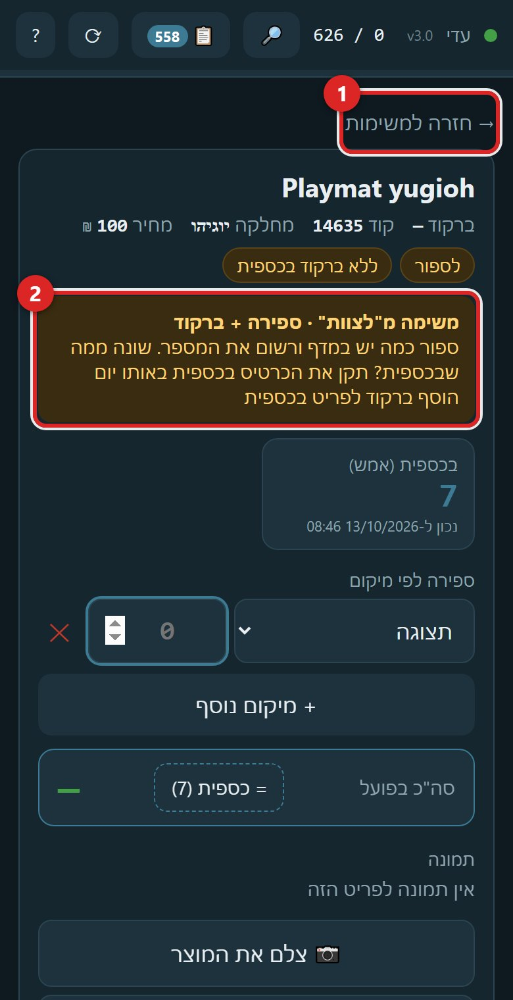
- 1"→ חזרה למשימות" מחזיר לרשימה. 2ההוראה בכתום — עושים מה שכתוב וסופרים כרגיל.
- הרשימה מתעדכנת לבד כל דקה ואחרי כל תשובה. מה שמסמנים בגיליון נעלם גם מהטלפון.
כל מה שמסמנים בטלפון נכתב לגיליון "לצוות" על השם שלכם.
14הכללים
הספירה האחרונה קובעת. טעות? סופרים שוב. שום ספירה לא נמחקת.
הכמות שרואים "בכספית" היא מאמש. הפער האמיתי מחושב בלילה ומופיע בדוח ובגיליון המלאי למחרת.
משלוח שמגיע ביום שבו הפריט כבר נסרק: מסדרים על המדף וסורקים את הפריט שוב.
פריט בלי ברקוד: מחפשים לפי קוד או שם (🔎) וסופרים — הוא לא נספר לבד.
ספרתם ויצא שונה מהכרטיס? מתקנים גם את הכרטיס בקופה באותו יום.